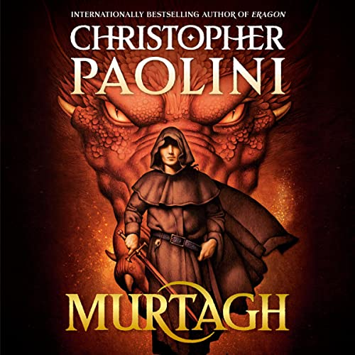

<div class="my-page-body">
<div class="image">
    <div class="container">
        <div class="row">

            <div class="col-12 ">
                <h2 class="header2">Latest news</h2>
            </div>

            <div class="col-8">
                <h5>New look into Harry Potter franchise!</h5>
                
                <p> It's time to return to the Wizarding World of "Harry Potter." Warner Bros. Discovery has officially
                    announced its plan for a decade-long television series that will be "a faithful adaptation" of J.K.
                    Rowling's "Harry Potter" books. The show will serve as an original series for Max—the new, mega
                    streaming service combining HBO Max and Discovery+ that arrives on May 23.
                </p>
                <a class="article-link" href="article-page-1.html">
                    <button type="button" class="btn btn-dark">Read more.</button>
                </a>
            </div>

            <div class="col-4">
                <h5>10 most read articles:</h5>
                <ul class="list-group">
                    <li class="list-group-item d-flex justify-content-between align-items-center">
                        <a class="link-top10" href="article-page-1.html">New look into Harry Potter franchise!</a>
                        <span class="badge bg-dark rounded-pill">14 views</span>
                    </li>
                    <li class="list-group-item d-flex justify-content-between align-items-center">
                        <a class="link-top10" href="article-page-1.html">Christopher Paolini returns to Eragon with new novel Murtagh!</a>
                        <span class="badge bg-dark rounded-pill">12 views</span>
                    </li>
                    <li class="list-group-item d-flex justify-content-between align-items-center">
                        <a class="link-top10" href="article-page-1.html">New look into Harry Potter franchise!</a>
                        <span class="badge bg-dark rounded-pill">10 views</span>
                    </li>
                </ul>
            </div>

            <div class="row">
                <div class="col-8">
                    <h5>Christopher Paolini returns to Eragon with new novel Murtagh!</h5>
                    
                    <p> It's time to return to Alagaësia. Twenty years after the official publication of Christopher
                        Paolini's Eragon by Alfred A. Knopf Books, the author is returning to his epic fantasy world for a
                        new standalone novel, Murtagh, set to be released later this year.
                    </p>
                    <a class="article-link" href="article-page-1.html">
                        <button type="button" class="btn btn-dark">Read more.</button>
                    </a>
                </div>
            </div>


        </div>
    </div>
</div>
</div>


